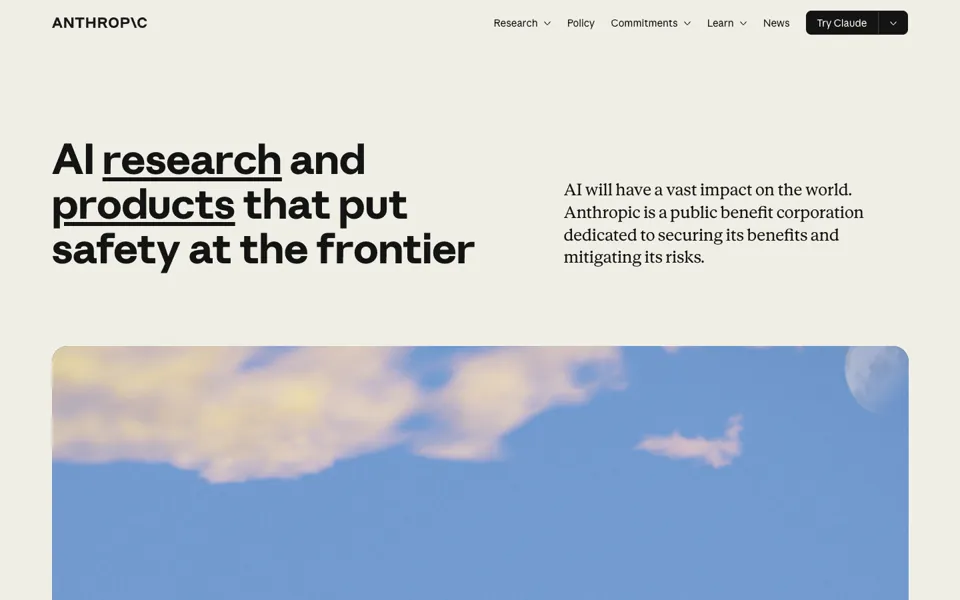

暖色人文编辑风（衬线 + 无衬线，手绘插画）
Anthropic
公开背书（均已点开核实）
- Geist 官方 case study — 页面确实写明：陪伴两年半，从隐身期到产品发布；Styrene（Commercial Type）+ Tiempos（Klim）；纯文字 logo 的斜杠细节；暖色系统同时服务营销与产品 UI；定制插画强调人的价值；摄影师 Aaron Wojack；组件系统；引用联合创始人 Jack Clark 的评价。页面称合作始于 2020 年，Claude 于 2023 年中发布。 · 2020–2023
- type.today Journal（字体媒体）「Styrene in use」 — 2024-04-04 发表的专文，分析 Anthropic 如何用字体让 AI 产品显得亲近而非吓人；记载网站标题用 Styrene（Berton Hasebe），正文用 Tiempos（Klim）。属行业媒体评论，不是奖项。 · 2024
- Abduzeedo（设计媒体） — 2024-11-21 发表的专题，报道 Geist 为 Anthropic 做的品牌与视觉识别，点评其极简、克制的字体与低饱和配色、模块化版式。属媒体收录，不是奖项。 · 2024
操刀Geist（geist.co）——负责 2020–2023 的品牌识别与网站体系；现站迭代由谁操刀未能核实
它高级在哪
- 对开首屏：同一水平带左侧约 7 列放 64px 粗体无衬线标题，右侧约 5 列放 24px 衬线导语，垂直居中；首屏不放按钮和徽章
- 标题内关键词直接做链接，用粗下划线标出，hover 只变下划线颜色——CTA 融进句子
- 底色用象牙而非纯白，辅色全是以纸张/陶土/植物命名的低饱和色（oat、manilla、kraft、olive、cactus），强调橙只小面积出现
- 满栅格宽、16px 圆角、带胶片颗粒的大幅画面，与文字区之间留 100px 以上空白；用 10% 透明墨线代替阴影
#f0eee6#faf9f5#e8e6dc#141413#5e5d59#d97757#c6613f
字体标题/UI：Anthropic Sans（自有命名可变字体，字重 300–800，回退 Arial）；正文/导语：Anthropic Serif（300–800，回退 Georgia）；等宽：Anthropic Mono + JetBrains Mono 400（JetBrains）。早期体系为 Styrene（Commercial Type）+ Tiempos（Klim），现站 CSS 未读到。
字号H1（.u-display-xl）：Anthropic Sans，4rem/64px，字重 700，行高 1.1，字距 0，text-wrap: balance。展示阶梯 6/4.5/4/3/2/1.5/1.25rem；字距仅 0、-0.005em、-0.02em 三档；每种字体都定义了上下 text-trim 值做光学对齐。
形与动圆角四档 4/8/16px/胶囊，8px 最常用，大图用 16px；阴影极淡多层（0 2px 2px #00000003, 0 4px 4px #00000005, 0 16px 24px #0000000a），多数面无阴影，靠底色差与 10% 墨线分层。12 列栅格、页边距 64px、列距 2rem、最大宽 89.5rem、区块间距常态 10rem；动效几乎全是 .2s 的颜色/边框/下划线色过渡，缓动只读到 cubic-bezier(.165,.84,.44,1)。
搬到半人马学院
借：象牙底 + 近黑墨色的双色骨架、对开首屏、标题内下划线链接、10rem 区块留白、墨线代替阴影；logo 的橙蓝正好对位它的 Clay #d97757 与 Sky #6a9bcc。补：Anthropic Sans/Serif 是自有字体不可用，中文用思源黑体 Heavy + 思源宋体（免费可商用），西文可配 Inter + Source Serif；现有三张暖色插画需统一加颗粒与 16px 圆角，并再补 2–3 张同风格大幅横图。风险：这套风格靠「少」成立，堆课程卡/价格/二维码会立刻变廉价；中文粗黑在 64px 下偏重需降字重或字号；配色与 Anthropic/Claude 辨识度高，必须用自己的折纸半人马插画语言避免像仿站。档案：/private/tmp/claude-502/-Users-qiu-----/7d6f27d1-bb5d-40db-915c-d59a6bdb5162/scratchpad/styles-repo/references/anthropic/STYLE.md 与 fold.png。